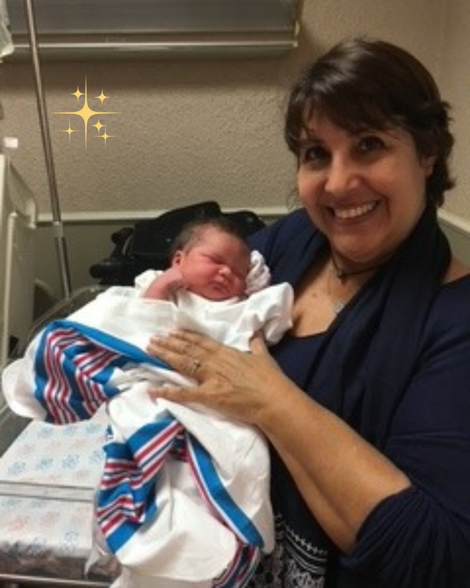

Consultoría en Lactancia Materna a Domicilio
Apoyo emocional, práctico y educativo para una lactancia exitosa y plena, sin salir de tu hogar.

¿Qué incluye el apoyo en lactancia?
Ofrezco consultoría personalizada para madres y sus bebés, brindando acompañamiento experto en los primeros días y meses.
- Evaluación de agarre, postura y producción de leche
- Solución de pezones planos, grietas, congestión y más
- Apoyo emocional para la madre y orientación para el bienestar familiar
- Guía sobre alimentación complementaria y cuidado integral del bebé
- Consejos para el manejo del sueño, baño y cólicos
Preguntas Frecuentes sobre Lactancia Materna
- ¿Con qué frecuencia debo amamantar a mi bebé?
- Durante las primeras semanas se recomienda amamantar a demanda, usualmente entre 8 y 12 veces en 24 horas, adaptado al bebé y madre.
- ¿Cómo saber si mi bebé está recibiendo suficiente leche?
- Observa la cantidad de pañales mojados, el aumento de peso y signos de satisfacción después de la toma.
- ¿Qué hacer si siento dolor en los pezones al amamantar?
- Asegúrate que la posición y agarre del bebé sean correctos. Consulta a un especialista si persiste el dolor.
- ¿Puedo amamantar si estoy enferma?
- En la mayoría de los casos, sí. La lactancia puede continuar y ayudar a proteger al bebé. Consulta a tu médico para casos específicos.
- ¿Cómo aumentar la producción de leche materna?
- Amamanta frecuentemente, mantente hidratada y relajada, y busca asesoría profesional si tienes dudas.
Apoyo en casa, a tu ritmo
Evita desplazamientos y estrés en estos primeros días tan importantes. Te acompaño respetando tu espacio y ritmo familiar en San Juan, Caguas, Bayamón, Dorado y zonas cercanas.